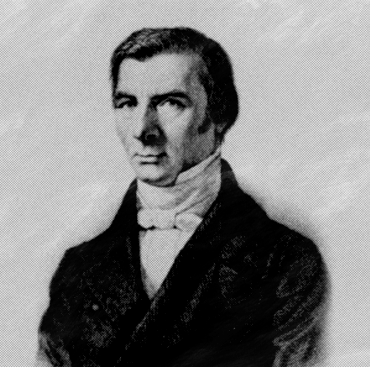

Claude Frédéric Bastiat
Claude Frédéric Bastiat (Baiona, 29 de junho de 1801 — Roma, 24 de dezembro de 1850) foi um economista e jornalista francês. A maior parte de sua obra foi escrita durante os anos que antecederam e que imediatamente sucederam a Revolução de 1848. Nessa época, eram grandes as discussões em torno do socialismo, para o qual a França pendia fortemente. Como deputado, teve a oportunidade de se opor vivamente às ideias socialistas, fazendo-o através de seus escritos, vazados em estilo cheio de humor e sátira.
Entre os economistas franceses, Frédéric Bastiat ocupa um lugar de destaque. Sua obra completa se compõe de sete volumes. Um princípio domina sua obra: A lei deve proteger o indivíduo, a liberdade e a propriedade privada. É desta forma que Bastiat analisa o funcionamento do Estado, esta "grande ficção através da qual todos se esforçam para viver às custas dos demais". Para ele, protecionismo, intervencionismo e socialismo são as três forças de perversão da lei.
Ao tomar conhecimento da campanha desenvolvida por Cobden e sua liga na Inglaterra, escreve um artigo, publicado no Journal des Économistes, no qual elogia os méritos do livre mercado. O sucesso é imediato. Bastiat vai a Paris e durante os sete anos que lhe restaram de vida se consagra incansavelmente a defender a causa que abraçara. Em 1848, é eleito para a Assembleia Constituinte e, depois, para a Assembleia Legislativa.